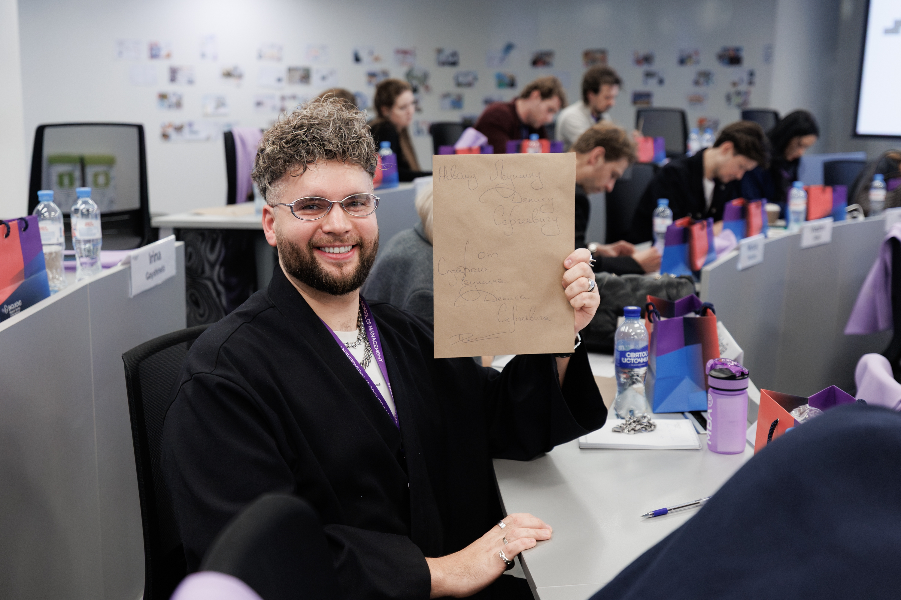

01 / ХОЧУ ПОПРОБОВАТЬНачни отсюда
Единый
файл правды
Один файл о компании, нейросеть отвечает по твоим правилам.
0 ₽демо бесплатно
Забрать демо · 0 ₽ ↗Откроется Telegram, бот проверит подписку на канал и пришлёт файл.Помогаю бизнесу
работать с ИИ.
На практике.
Нейросеть работает, когда знает твою компанию. Дальше три пути, выбери свой.
Выбрать путь ↓Начни с того, что нужно сейчас.
Остальное подключишь по ходу.
Один файл о компании, нейросеть отвечает по твоим правилам.
Готовые экраны и скиллы по MCP, решение на твоих данных.
Доведёшь одну работу компании до проверенного результата.
Все начинают с демо. Дальше бери только то, что нужно, или остановись на демо.
Короткий файл о компании. Нейросеть отвечает по твоим правилам.
Подробнее о демо ↗CEO-агент, отделы и журнал. Остаётся навсегда.
Экраны и скиллы под твою задачу по MCP.
Доведёшь одну работу до проверенного результата.
Вылечил тысячи людей, но тебя не вылечит без обследования. Нейросеть так же: без контекста компании выдаёт усреднёнку.
Начать с контекста ↗Чем занимается бизнес
✓Клиенты, продукты и процессы
✓Правила и реальные данные
✓Ответы по твоим правилам.
Решения на твоих данных.
ПО СЛОВАМ УЧАСТНИКАна контроль звонков отдела продаж. Разбор приходит по расписанию.
Самоотчёт участника в чате 2-го потока: сообщения #877 и #1746, отзыв от 08.08.2026.
ПО СЛОВАМ УЧАСТНИЦЫсобрала за 5 дней. Общая работа в обучении заняла недели.
Самоотчёт участницы: обсуждения #4078 и сообщение #1748 в чате 2-го потока.
Опыт прошлых потоков со слов участников. У каждой задачи свои сроки и объём помощи.
Готовые экраны, навыки и инструкции.
Твоя нейросеть берёт нужное по MCP
и собирает решение на твоих данных.
↗ 320 000 ₽ ещё не поступили. Проверьте неоплаченные заказы.
↗ Воронка помогает увидеть, на каком этапе теряются клиенты.
Клиент сравнивает два проекта. Обсудили бюджет, цель покупки и рассрочку. Договорились об онлайн-показе в четверг в 18:00.
Учебный пример интерфейса. Данные демонстрационные, к компании не подключён.
Один понятный процесс — от фактов о компании до готового решения.
Забираешь демо и за вечер отдаёшь нейросети факты о своей компании.
Забрать демо ↗Ключ из кабинета подключается к нейросети, которой ты уже пользуешься.
Открыть кабинет ↗Твоя нейросеть забирает решение: экран, инструкцию, скилл. Данные остаются у тебя.
Посмотреть библиотеку ↗Выбери направление и посмотри, с чего можно начать.
Деньги, звонки, заявки и команда.
Посмотреть решения ↗


Подключите библиотеку к своей нейросети.
Возьмите нужный инструмент. Проверьте на своих данных.
29 900 ₽ за курс. В подарок — полная версия Единого файла правды и 1 месяц Catalyst OS. Доступ к курсу на 12 месяцев.
Посмотреть программу ↗9 900 ₽ в месяц. Оплата за 1 месяц.
Один доступ для своих проектов и компании.
С демо Единого файла правды: оно бесплатное и собирается за вечер. Дальше решишь, нужен ли Catalyst OS или курс.
Забрать демо ↗Для бесплатного метода хватит любой нейросети в браузере. Catalyst OS подключается к той, которой ты уже пользуешься: Cursor, Claude Code и Codex по ключу, claude.ai и ChatGPT через OAuth.
Единый файл правды собирается у тебя, в твоём чате или папке. Catalyst OS отдаёт метод и образцы, контекст твоей компании к нам не приходит.
Установленные файлы, шаблоны, код, данные и Единый файл правды остаются у тебя. Новые материалы и обновления через MCP закрываются.
Да, для этого нужна коммерческая лицензия Catalyst OS. Индивидуальная лицензия для своих проектов и своей компании.
Подписку Catalyst OS оформляешь в кабинете, курс оплачиваешь на странице курса. Платёж идёт через ЮKassa, чек приходит на почту.
Уже на Catalyst OS? Курс стоит те же 29 900 ₽: подписка продлится на 1 месяц. Скидки на продление и зачёта нет.
Нет, это отдельный продукт за 29 900 ₽. В подарок к курсу: полная версия Единого файла правды и 1 месяц Catalyst OS.
Программа курса ↗